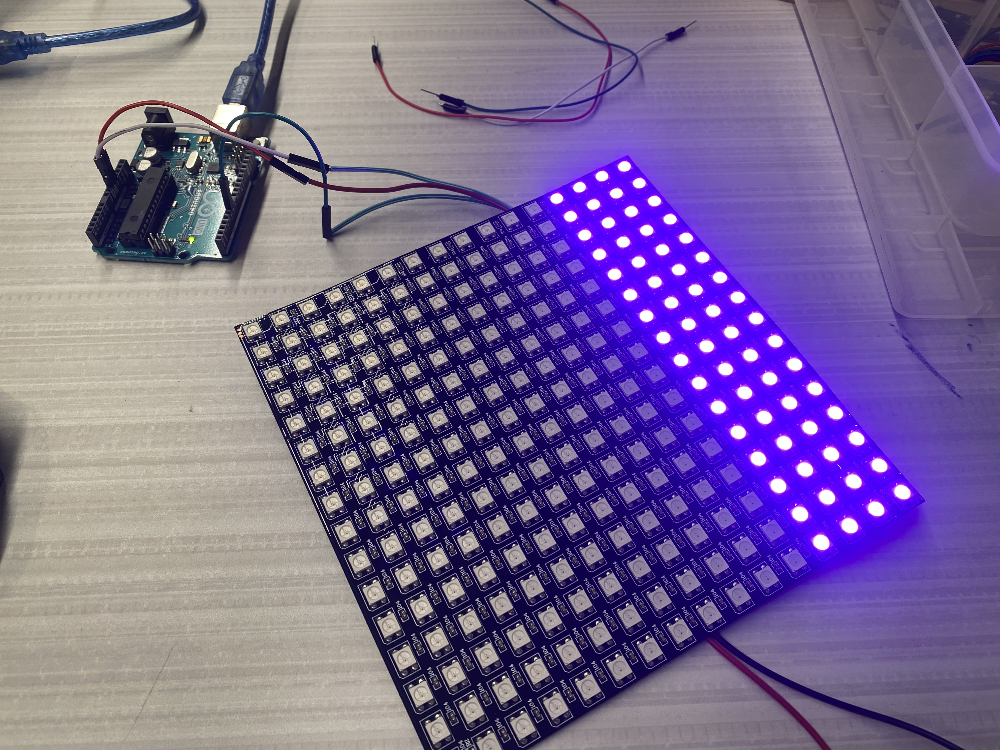

While this page is being worked on, I am going to be recording how the prototyping process has gone thus far.
Prototyping
October 24, 2024
After having recieved the RFP from Fairchild about what they wanted us to create, my group sat down and broke down what we needed to start working on to two main issues: Motor control and LED control. I started working with the stepper motors that we ordered. This day was mainly spent getting one of the steppers to work with the ULN2003 driver board that the motors came with. I found a diagram online to wire the motor to an arduino, then I asked ChatGPT to gove me some base code. After seeing the motor work, the last thing I did was wire a second motor to the arduino to figure out next class how to get the two motors to work in tandem.
October 28, 2024
Today was comprised of a lot of back and forth researching on how to get two servo motors to run in tandem using an arduino UNO R3. I went through several forums and asked ChatGPT for help with writing the code. Through this, I started going between two libraries on arduino IDE: Stepper.h and Accelstepper.h. The main issue I was having getting the two motors to spin at the same time in opposite directions. By the end of the day, I was only able get the motors to spin together in the same direction.
October 30, 2024
We began today by working on the lighting lystem. My team member Jack had been working slightly on this previously, however I joined him because he was having trouble getting started. We had procured two WS2812B LED Panels to use as lights for our small prototype, mimicking the light panels that we will have to use for the actual clinostat. I first went to ChatGPT to research how to program the board. This is where I learned about the Adafruit Neopixel library. After installing this and using the base code that ChatGPT suggested, Jack and I were able to turn the light on. However, of the 256 total LEDs in the 16x16 pixel display, only 64 turned on, and any attempt to change the color of the lights failed. After trouble shooting with the code, the LED panels, and the arduino board, we figured out that because the board was drawing too much power from the laptop that it was connected to to turn the LEDs on, the computer didn't recognize the port correctly and couldn't upload the code to the board. The laptop also wasn't supplying enough power to turn on all the lights, as shown below.
November 1, 2024
After switching to a more powerful laptop and disconnecting the lights when uploading the code to the board, we were able to successfully turn on the LED panel, and even have it change colors. However, I believe it necessary to look into adding a relay to the circuit to take away the stress of the current from the arduino board and not risk it overheating or frying. After getting one panel to work, all that was necessary to add the other panel was to daisy chain it to the first panel and double to pixel count in the initial code. The next images show the single and double panel circuits.
November 5, 2024
Today I was spent working with Mr. Perez on getting the motors to work properly. I decided to stick with using the Accelstepper.h library, as it gave me more control over the motors. After working for a bit, I was able to have the motors spin in tandem in opposite directions, which would allow the motors to spin the clinostat's body together, as the motors are facing each other in the design. However, I was only able to get the motors to spin back and forth between two set positions, between which the motors would accelerate to a certain speed and then slow down when they approached the set positions. Instead, I needed the motors to start spinning and not stop. I tried to code this in by using the motor.runSpeed() command, but this seemed to crash the code, causing the motors to not move at all. By the end of the day, I was only able to have the motors spin between positions, but more importantly I had the motors spinning in opposite directions, which was good progress.
November 12
Brainstorming or "think-tanking" was the main priority today. I took a step away from working on the stepper motors to sit down with my teammate Jose Zequeira and think of a solution for wiring. An issue I hadn't thought of before he brought it up was how the wires would remain untangled while the clinostat was spinning. Jose had already found a solution to this: the slip ring. This device uses metal contacts rubbing against internal metal rings to transmit power and electrical signals from a stationary to a rotating structure. This fixed the first issue of wire control, however a new problem emerged: how to prevent the motor and wires from getting tangled. We considered different motor orientations or hollow axes that could make this possible, however we couldn't figure out a viable option. We shifted over to researching possible solutions, where I immediately went to youtube to find a video repesentation of a 3-dimensional clinostat. I went through several videos, studying the motion of the device as well as trying to figure our exactly what component was being used for the wiring with the motor, until I came across the video linked below. This video came up with a clever solution to our issue: offset the motor using gears. This idea perfectly solved the issue we were having with out preliminary design (however, we plan to use a through-bore slip ring in the future so that the motor right under the slip ring). After watching the rest of the video and seeing that the project was open source, we decided to use this 3-d printable clinostat as our prototype, this was we could analyze the clinostat and see where we can improve or change certain things.
November 14
Once I looked into the Github for the online clinostat and Jose prepared all the g-code for the printers, we began printing all the necessary parts for the clinostat. While waiting for essentially the frame and gears to print, I gathered other necessary components: servo motors, a slip ring, and an Arduino UNO. However, these weren't entirely the correct components, as the servo motors only had 180° of movement, and the slip ring we ordered was the wrong size. Regardless, by the end of the day, I had all the necessary parts to build a functioning clinostat.
November 17
I spent the late afternoon and evening today finalizing the initial prototype. This was more of an issue than I initially thought, as I was using the wrong size slip ring (I was using a 12.5 mm slip ring instead of the intended 15 mm slip ring). To solve this issue, I sanded down the slot which the slip ring would sit in so the smaller one would fit entirely. Then, I created a wooden peg with a hole in it to better support the wires. The issue here was that the larger slip ring had an extrusion that acted as an axis for the clinostat, while the smaller slip ring lacked this. The wooden peg alleviated the issue, as the wires now acted as a sort-of axis, however there were still issues with the gears on this axis slipping apart. To fix this temporarily while we waited for the correct parts, we flipped the clinostat upside down so that the gears fell into each other. Doing this, we were able to get the prototype working properly, albeit not well.
November 20, 22, and 25
These days were spent finalizing the initial prototype. On the 20th, Zequeira and I were able to find continuous rotating servo motors, which I quickly added onto the clinostat. The code for these motors is very simple, using the command myservo.write(98) to set the motors spinning at a slow speed in the counterclockwise direction. The 22nd was spent adding daily updates and overall housekeeping to my website. Finally, I receieved the correct slip ring in the mail on the 25th, so I spent the afternoon adding this slip ring to the prototype. This was the final piece needed to complete the initial prototype. As a bonus, I 3D printed a holder for the arduino UNO and bread board that was being used.
December 3
I revisited the LED panels, looking for a solution to the main issue: the arduino overheating because of the current pull of the LED panels. I trie working with a 5V relay to possibly fix the issue. After researching an electrical schematic for the relay, I went to wire everything together. However, I spent a long while soldering headers onto the necessary wires to make it easier to work with. Once this was done, I was able to set up most of the wiring, however the relay didn't fit into the bread board, and the period ended before I used wired to connect it to the rest of the board.
December 5 and 9
These days were spent working on our documentation - specifically our PDR text document and video report. I spent my time filling out many of the technical aspects of the PDR, as that was what I had already worked on for the project, so I had the best understanding of those sections. I also outlined the script for the PDR video, making sure that each of my team members focused only on key aspects and not specific details. In the afternoon, after receiving everyone's voice recordings, I put the video together, using footage of the clinostat working along with images of the Fairchild Growing Beyond Earth program, the clinostat's code, and a demonstration of how the slip ring worked. Once done, I uploaded the video over to my teacher Mr. Perez so that he could upload it to my school's instagram, finishing on the 9th.
These days were spent working on our documentation - specifically our PDR text document and video report. I spent my time filling out many of the technical aspects of the PDR, as that was what I had already worked on for the project, so I had the best understanding of those sections. I also outlined the script for the PDR video, making sure that each of my team members focused only on key aspects and not specific details. In the afternoon, after receiving everyone's voice recordings, I put the video together, using footage of the clinostat working along with images of the Fairchild Growing Beyond Earth program, the clinostat's code, and a demonstration of how the slip ring worked. Once done, I uploaded the video over to my teacher Mr. Perez so that he could upload it to my school's instagram, finishing on the 9th.
December 11
The final day before break was used for house keeping, making sure that my website was updated and that my team knew what to expect when we got back to school. After a quick meeting, class ended and we went on break.
January 8, 2025
Immediately when we got back to school we were given a new mini-project to work on. There were two tasks for this new assignment - First, to create and print a 3D model that could not be made using subractive methods, and 3D scan an object. I began with the 3D model, as I already had an idea of what to make. Based on a toy my dog plays with, I wanted to make a 20-sided shape that was only held along the edges so that it was hollow. It would then be able to print a ball on the inside of the shape, creating a shaoe with a loose ball jiggling inside the shape. I began to model this using a technique I learned for making the 20-sided shape, using rectangles that used the golden ratio to have the right size. This went well initially until I had to make the shape hollow, where extruding into the shape didn't work very well with the later extrusions. The day ended with me running into this issue and tryong ti find a way around it.
January 10
I decided that I wanted to change the design I was modeling to a simple bearing design. I began by making essentially a tie-fighter shape, using two recangles and two extremely close, overlapping circles sandwiched inbetween them. After this I rotated the two outside sections of the rectangles around an offset axis I made in the sketch. Finally, I rotated the ball-bearing around itself and then created a pattern of 10 balls inside of the created loops, finishing the design. Once done there, I set the bearing to print and joined up with Jack to 3D scan his head and face.
Januray 14
Today was simple: I spent my time working out a plan for testing the forces that act at the center of the clinostat. Knowing that force was simply mass x acceleration, I asked Mr. Perez for an accelerometer. He gave me an XRP board which has an accelerometer. I plan to place this in the clinostat and record the acceleration acting on it. This testing will let us see whether the forces actually cancel out or if the clinostat needs adjustment. However, before testing, I first need to learn how to code the XRP to give me the data from the accelerometer.
January 16
The website has now been updated, including the 3D scanning and Printing page as well as the daily updates that were missing. Some work was also started on learning to use the XRP and the Buck Convertor.
Januray 14
Today was simple: I spent my time working out a plan for testing the forces that act at the center of the clinostat. Knowing that force was simply mass x acceleration, I asked Mr. Perez for an accelerometer. He gave me an XRP board which has an accelerometer. I plan to place this in the clinostat and record the acceleration acting on it. This testing will let us see whether the forces actually cancel out or if the clinostat needs adjustment. However, before testing, I first need to learn how to code the XRP to give me the data from the accelerometer.
January 16
The website has now been updated, including the 3D scanning and Printing page as well as the daily updates that were missing. Some work was also started on learning to use the XRP and the Buck Convertor.